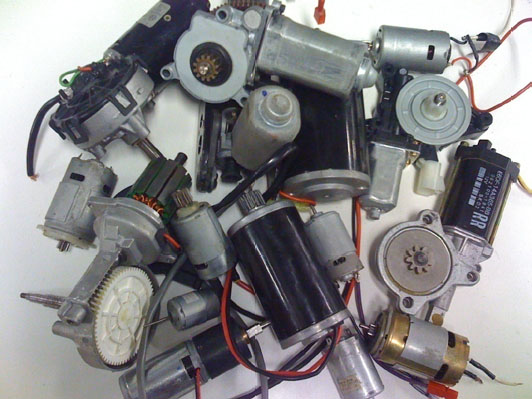

Motors
Introduction
Electric motors are one of the most common types of actuators found in robotics. Effectively using motors in your design will allow your robot to take action based on the direction given by its sensors and programming. Although there are many types of electric motors, this section will focus on the mechanics, mathematics, and proper use of DC permanent magnet, brushed motors. Commonly referred to as PMDC motors, they are a popular choice due to their small size and cost, and the fact that unlike many DC motors, powering them is as simple as connecting a constant voltage to the motor.
|  |
Basic Concepts
A motor is an imperfect transducer. Motors are used to convert electrical power into mechanical power, in this case, a torque applied to the motor’s output shaft. However, motors will also inevitably transform some of the given electrical power into thermal energy, heating up the motor instead of producing useful work.
Both power input and output can be measured in any unit of power, typically Watts. Power is the rate at which work is done. In mechanical terms, high power implies that not only is a load being moved with a great deal of speed, but continuing to move the load demands a great deal of force of a system. In terms of a rotating motor, power is calculated using the formula P=kτω.
Where τ is the torque , twisting effort, being output by the motor, ω is the angular velocity of the output, and k the scale factor is used to correct for varied units . Some of the more common scale factors are .0118 for when in*lbs are used along with Watts and RPM, and .1047 when N*m are used with Watts and RPM.
A key point to remember is that torque and velocity are equally important in the power formula. You could have X torque and Y speed, or Y torque and X speed, and get the exact same amount of power. If you ever had zero speed or zero torque, there would be no power.
Electrical power, also measured in Watts, is calculated using the formula P=IV, where I is electrical current in Amperes, and V is the motor’s voltage. A motor that is drawing 40 amps while connected to a 12 volt supply is using how many Watts of electrical power?
- Answer
-
40A*12V=480W
480 Watts
-
Motors are typically rated according to the mechanical power that they can output. The power rating is a limiting factor as infinite torque can be generated through transmissions, but through each transmission power is reduced. If at the same time as this same motor draws 480 Watts of electrical power, it is spinning at 3800RPM and outputting 6.15 in*lbs of torque , how many Watts of power is it outputting? Remember as mentioned before the conversion factor for using in*lbs with RPM and Watts is 0.0118.
- Answer
-
0.0118*3800RPM*6.15in*lbs=275W
It is outputting 275 Watts
-
Obviously a significant amount of power was lost in this process. Dividing power output by power input produces an important value for all motors called efficiency. Pout/Pin=eefficiency, in our case 275 Watts/480 Watts = 0.573. Typically presented as a percent, efficiency tells you how much of the electrical power being input to the motor is actually being converted to useful mechanical power. The remaining power, in this case 205 Watts, is wasted as heat and sound.
⇐ Previous Page Menu Next Page ⇒
comments powered by Disqus